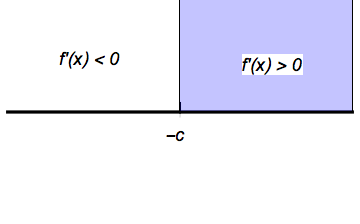

\(f(x)=(x+c)^4\) where \(c\) is a positive constant
\[f'(x)=4(x+c)^3, f''(x)=12(x+c)^2\]
To find the critical points: \(f'(x)=0=4(x+c)^3\). This occurs when \(x=-c\)
Using the second derivative test: \(f''(-c)=12(-c+c)^2=0\). The second derivative test was inconclusive so we need to use the first derivative test.
Making a sign chart we see that if we plug something a little less than \(-c\) into \(f'\), we’ll get a negative number. If we plug something a little greater than \(-c\) into \(f'\), we’ll get a positive number.

At \(x=-c\), \(f\) has a local minimum by the first derivative test since \(x=-c\) is a critical point of \(f\) and the sign of \(f'\) changes from negative to positive around \(x=-c\).